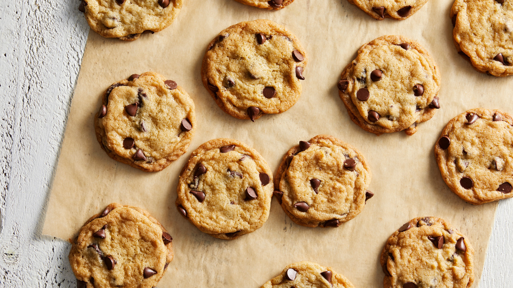

Cookie Classification
Six months ago when quarantine started, I suddenly had the time to tackle my pipeline of new hobbies; baking great cookies was first on my list. I bought a hand-mixer, went crazy at bulk barn, googled some recipes, and then baked and delivered dozens of cookies. While I'm sure that I would have gotten positive feedback based on the gesture alone, some cookies were definitely bigger hits than others. I immediately became curious about what made a good recipe.
I started by googling "cookie science". Making cookies is the perfect experiment because the ingredients are more or less the same (i.e. four, butter, baking soda, baking powder, sugar, egg, vanilla), but how you combine them yields drastically different results. Based on my findings, I put together a summary of expected inputs (ingredient ratios and baking methods) and expected outputs (cookie characteristics).
Now I just needed a way to validate my hypotheses with quantitative results. If I were to conduct hundreds of cookie experiments, I would test how cookie diameter increases with butter content and quantify crispiness by dropping cookies from different heights. Instead, I decided to approach this with machine learning.
I intuitively wanted to run a linear regression algorithm to model the relationship between characteristics and compositions, but I didn't have the data for it. However, by web-scraping I could get a data set for which easy recipe is assigned each a binary classification (i.e. crispy or chewy, thick or thin, smooth or wrinkled) by searching for key words in their titles and description. I decided to do this for the most popular cookie I knew - the chocolate chip cookie.
Step 1: Web Scraping cookie recipes
I set up a web crawler using python's Scrapy to search for "chewy" chocolate chip cookies and "crispy" chocoalte chip cookies on the Food Network respostiory. For each recipe, I scraped the title, url, ingredients, and directions.
Step 2: Calculating ingredient percentages by weight
Using regular expressions I extracted the type, quantity, and units for each ingredient and then calculated its weight in grams to arrive at a percentage. Next, I created violin plots to see how crispy and chewy cookies compared in the four main ingredients; flour, butter, sugar, and egg.
As expected, chewy cookies had relatively high flour (~23%) versus crispy cookies (~19%). However, comparing these main ingredients didn't account for substitutes that were used in many cases e.g. oats instead of flour, oil instead of butter, etc.
Step 3: Calculating composition at a more granular level
To account for different types of ingredients, I went down one level further and extracted the expected levels of protein (flour, oats, egg), fat (oil, butter, shortening), sucrose (sugar, honey, syrup) and water (egg, vanilla, butter) for each ingredient and created the same plots.
This successfully differentiated the plots further. The next step was to check if there was a visual boundary between crispy and chewy cookies that could be seen on 2d plots.
Step 4: Running a classification algorithm to predict crispiness